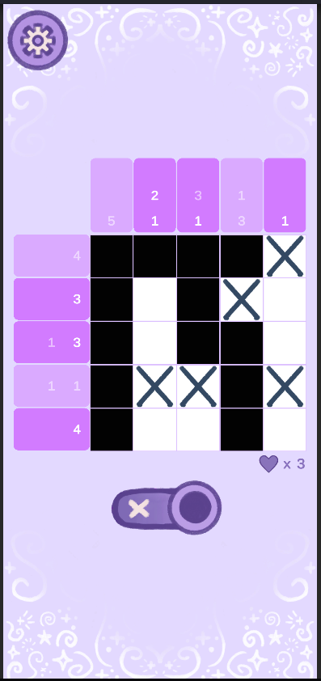
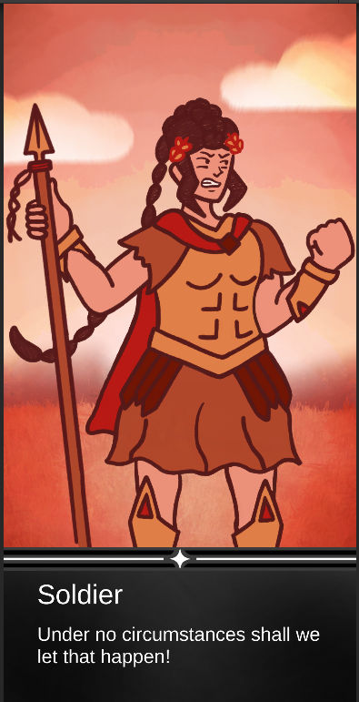
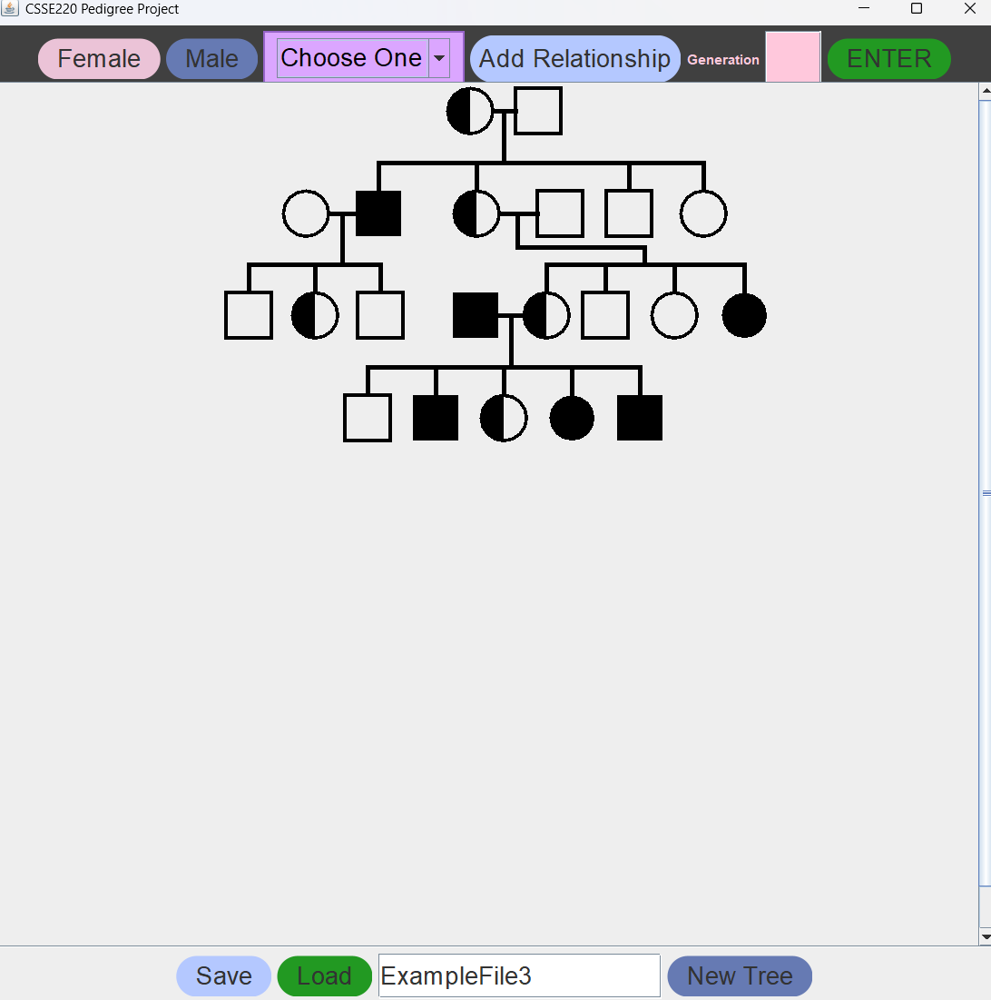
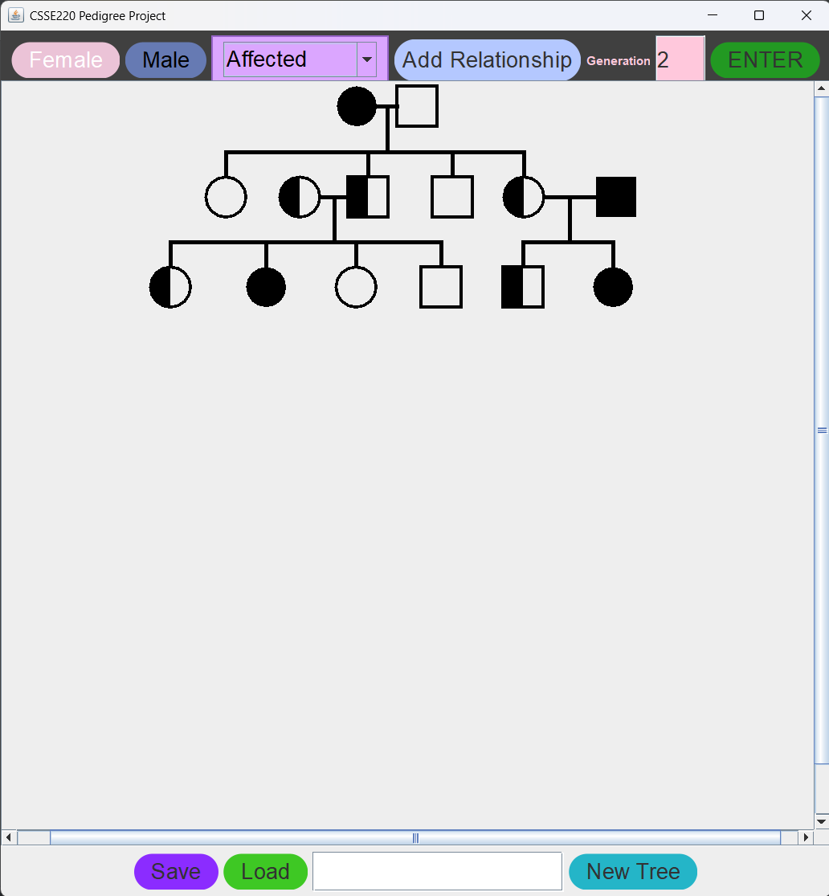
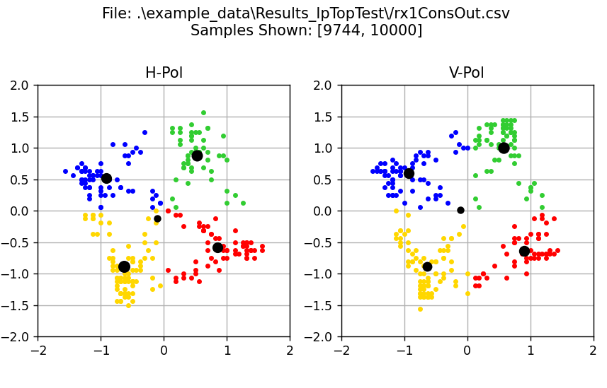
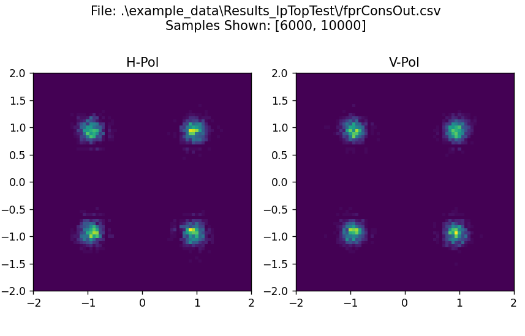
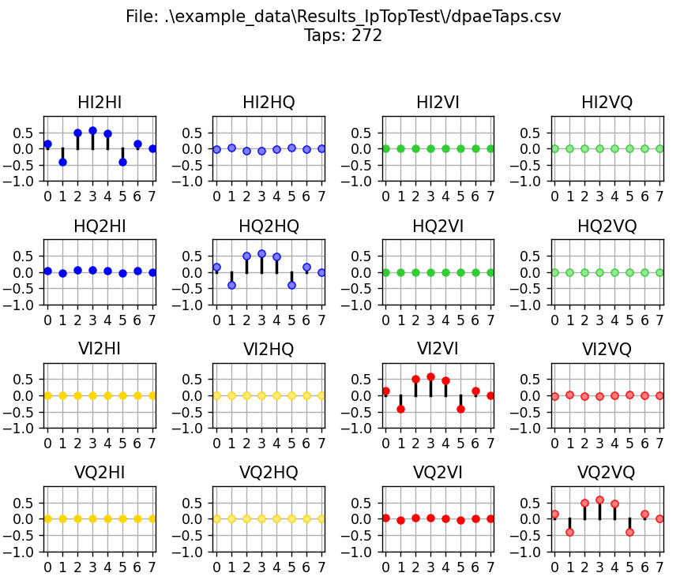
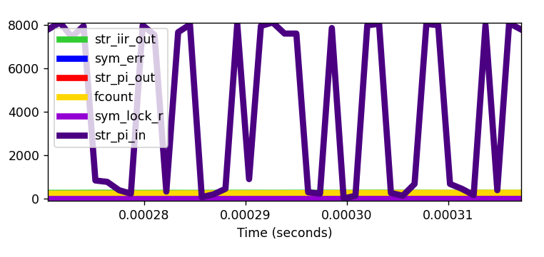

This is an ongoing project that currently includes nonogram (picross) puzzles and a visual novel. It is developed using Unity and C#. I am working in a team of three as the programmer and an assistant artist.
Skills Used:


This was developed as a final project for a CS class in a team of four. The program allows users to create pedigrees through a UI system, and save/load them using text files. They can also drag and drop the “people” on the pedigree to reposition them.
Skills Used:


This program was created during my internship at Effect Photonics, an optical systems company. I was tasked with creating a program to visualize three types of data that were being generated live from a simulation.
Skills Used:



